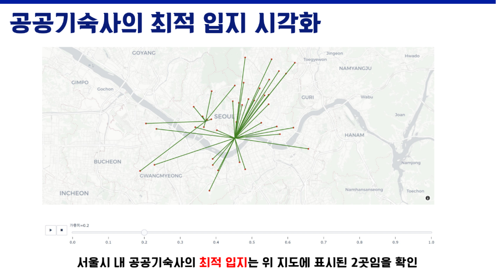
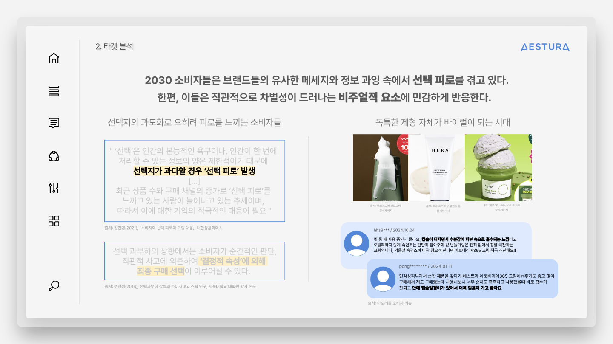
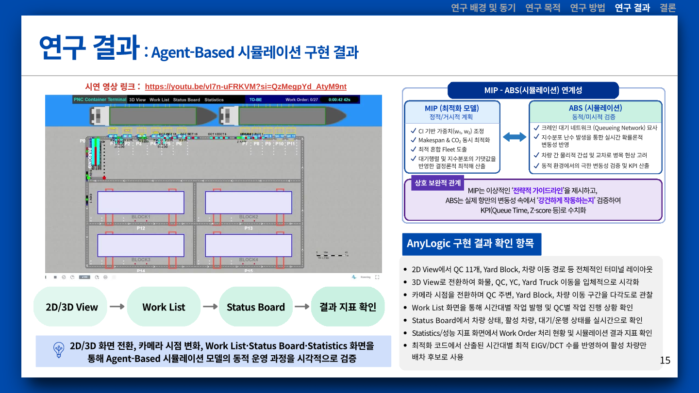
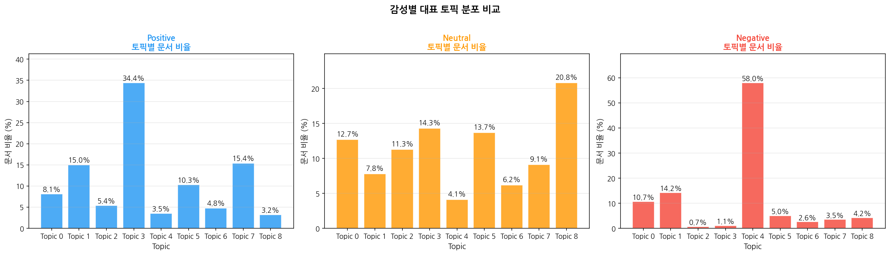
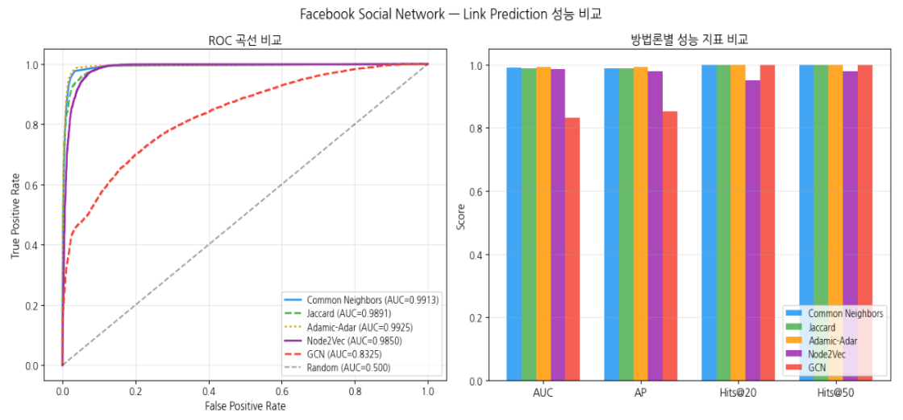
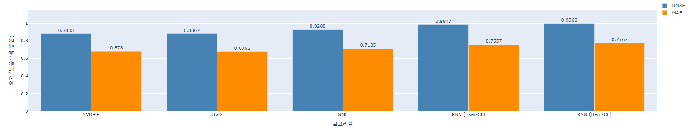
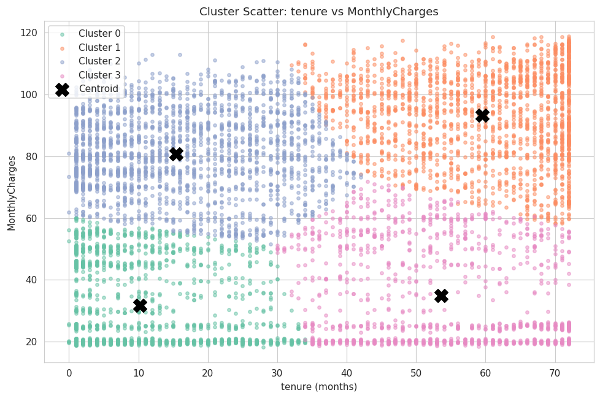
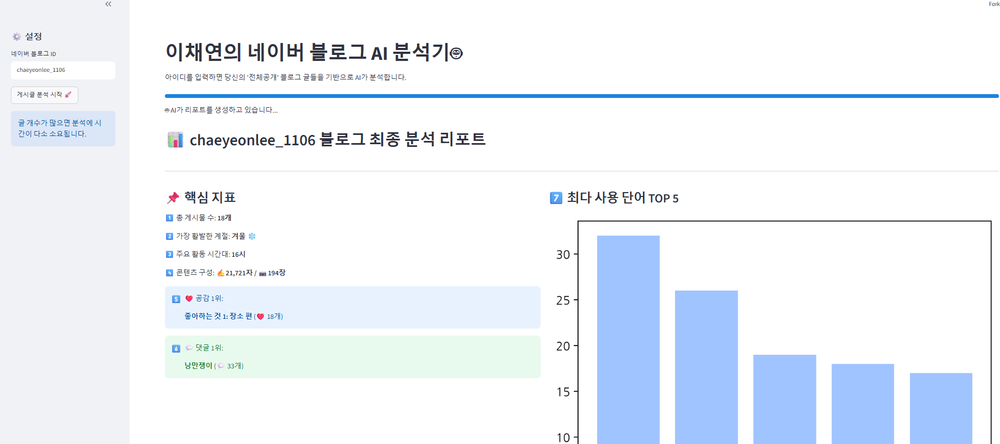

Projects
🏆 공모전 및 대회



항만 혼잡도 기반 시나리오별 혼합 컨테이너 트럭 시스템의 배차 스케줄링 최적화
항만 터미널 내 QC-YC 수평 운송의 혼잡 수준을 분류하는 지수를 백분위 및 클러스터링 기법으로 설계한 연구
💻 개인 코드 분석 프로젝트

COVID-19 트윗 토픽 모델링
감성별(긍정/부정/중립) 트윗 데이터에 LDA 기법을 적용하여 주제를 분류하고 인사이트를 도출한 데이터 분석 과제

소셜 네트워크 링크 예측 (Link Prediction)
Facebook 소셜 네트워크 데이터를 활용해 Adamic-Adar, Jaccard 등 휴리스틱 기법부터 Node2Vec, GCN까지 다양한 링크 예측 모델의 성능을 비교·분석한 데이터 애널리틱스 실습 과제

영화 추천 시스템 구축 (Recommender System)
MovieLens 데이터셋으로 Content-Based와 Collaborative Filtering(SVD, SVD++ 등) 알고리즘을 비교하고, 하이브리드 추천 모델을 설계·평가한 데이터 애널리틱스 실습 과제

고객 이탈 예측 및 세분화 (Classification & Clustering)
Telco Customer Churn 데이터셋으로 로지스틱 회귀 등 7개 분류 모델을 비교하고, K-Means·DBSCAN 군집분석을 결합해 이탈 위험 고객군을 세분화한 데이터 애널리틱스 실습 과제
🚀 개인 서비스 개발 경험

단어 시험 스케줄 관리 웹서비스
학원 강사로 일하며 직접 겪었던 재시험지 준비와 단어 시험 일정 관리의 비효율을 개선하기 위해, 학생별 재시험지 자동 생성과 단어 시험 스케줄 관리 기능을 기획부터 개발까지 직접 만든 프로젝트

네이버 블로그 AI 분석기
Selenium으로 네이버 블로그 게시글을 크롤링하고 Google Gemini API로 글의 주제·톤·키워드를 분석해 시각화해주는 개인 개발 웹서비스. Streamlit Cloud에 직접 배포까지 진행했습니다